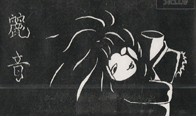
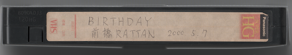

RAIN Discography
DEMO TAPE "~for~"

Release: 1996.XX.XX
Songs
- ~for~
- Ningyou (人形)
Lyrics sheet
NOTE: This demo tape before Syunji (瞬時) joined.
DEMO TAPE "妖艶" (Youen)

Release: 1997.XX.XX
Songs
- su.i.cide
- CRIES (クライズ)
- Hikari no Kage (光の影)
- Dead or Alive
- Youen (妖艶)
DEMO TAPE "REPLICA" (レプリカ)

Release: 1998.XX.XX
Songs
- REPLICA (レプリカ)
- Shinka no Shunkan (進化の瞬間)
OMNIBUS CD "Kamigami no Tasogare (神々の黄昏) Vol.2"
Release: 1999.XX.XX
Songs
- Lilie / S'aLateal
- Rinne (輪廻) / Raffia di:ser
- pain / mazohystant[E]-goist
- Mugen (無限) / NOIZ
- PLATONIC / PARANOIA
- Lastkiss Bluemoon / LAXIS
- less / RAIN (麗音)
- Lonely Night / SECIR
- PARANOIA (パラノイア) / Guilty Kreuz
- Shougeki (衝撃) / THE CRACKTRIGGER
- mercy... / Rustless mind
- Eternal rise / Flare
- DIS / DI/PROGRAM
NOTE: Distributed at the Tochigi Kaikan.
DEMO TAPE 「less」

Release: 1999.XX.XX
Songs
- less
- REPLICA (レプリカ)
Lyric sheet
NOTE: Distributed free of charge only once at a live in Gunma. less is the same content as "Kamigami no Tasogare Vol.2".
OMNIBUS DEMO TAPE "Gunma Kakumei" (群馬革命)

Release: 1999.11.22
Songs
- S / méffist
- REPLICA (レプリカ) / RAIN (麗音)
- crime of mind / CRESCENT
Lyrics sheet
OMNIBUS VIDEO TAPE 「BIRTHDAY 前橋RATTAN 2000.5.7」


Release: 2000's Summer
Contents
- Interview with making up (TANATOS, Chillkey Labemds, LAWINE, 麗音, méffist)
- Live movie of TANATOS (1 song)
- Live movie of LAWINE (Saimin (催眠), LUST [TYPE M])
- Live movie of Chillkey Labemds (JORKER (X JAPAN cover) and the other song. 2 songs)
- Live movie of RAIN (麗音) (Gyou (行) (Introduction), Youen (妖艶))
- Live movie of méffist (S and more songs)
OMNIBUS DEMO TAPE
Release: 2000.06.10
NOTE: This demo tape distributed free of charge at the Kagurazaka DIMENSION live on June 10, 2000. Including Songs are unknown.
DEMO TAPE "Kinu no Ito to Kumo no Ito / Gyou" (絹の絲と蜘の意図 / 行)

Release: 2000.07.29
Songs
- Kinu no Ito to Kumo no Ito (絹の絲と蜘の意図)
- Gyou (行)
Lyrics sheet
DEMO TAPE "Ga.RA.ku.TA.ba.KO" (Ga.ラ.ku.タ.ba.コ)
Release: 2000.10.13
Songs
- Ga.RA.ku.TA.ba.KO" (Ga.ラ.ku.タ.ba.コ)
Distributed as a bonus for those who enter the lives on August 28 and October 13.
DEMO TAPE "Eien" (永遠)

Release: 2000.12.05
Songs
- Shimobe (隷)
- su.i.cide
- eternal season
Lyrics sheet
文有希トリビュートアルバム 「to SILENCE」
Release: 2003.08.22
Songs
- never ending…
- Shinka no Shunkan (進化の瞬間) / méffist
- Shimobe (隷) / CRESCENT
- less / 蜘蛛-kumo-
- 「RAIN」〜麗しい音〜 / RAIN (麗音)
Lyrics card (PDF)
<< Back to index page


{kind=link}
{kind=link}
{kind=link}
{kind=link}
{kind=link}
{kind=link}